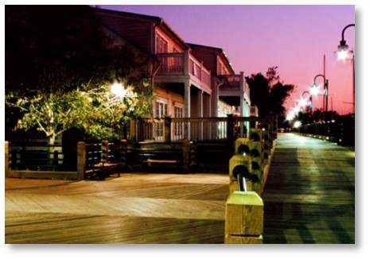

Riverfront
Riverwalk South
The first of the linear Riverwalk projects, Riverwalk South created a tourist destination along the historic shoreline.
Pile-supported timber boardwalk from Nun St to Dock St w/ Pocket Parks